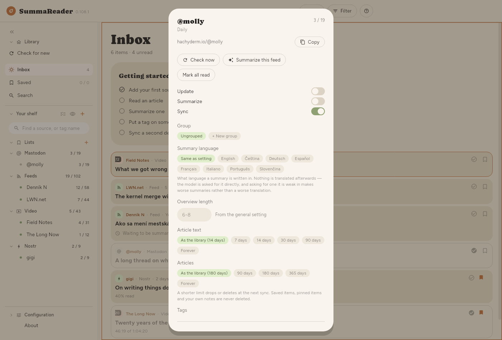
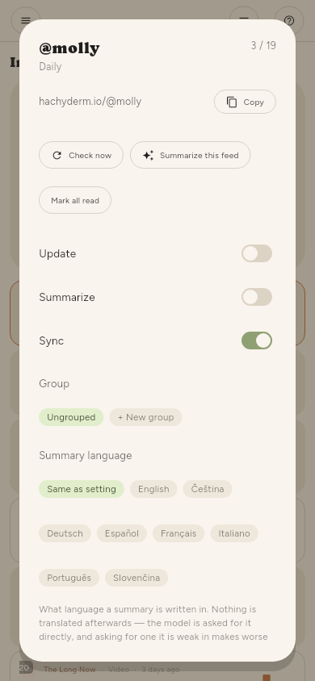

Managing sources
One feed
The gear on a shelf row (shown by Select several or a long press), or the gear beside the source's name in an open article, opens that feed:



| Check now | Fetch this feed |
| Summarize this feed | Everything of its waiting for one |
| Mark all read | Everything of its |
| Update | Whether checks include it |
| Summarize | Whether checks summarize it |
| Sync | Whether its articles travel to your other devices |
| Group, Summary language | Where it sits in the shelf, and its own summary language |
| Read articles again | Re-fetch text that failed |
| Summarize again | Discard its summaries and redo them |
| Remove | Asks first, and says what it costs |
Summarize again is what to use after changing the summary language or the model — an article that already has a summary is never redone otherwise.
Many feeds
Configuration › Basic › Sources › Sources is the same controls over the whole list, with a filter and a tick box, so "every YouTube channel I imported last week" is one action rather than three hundred.